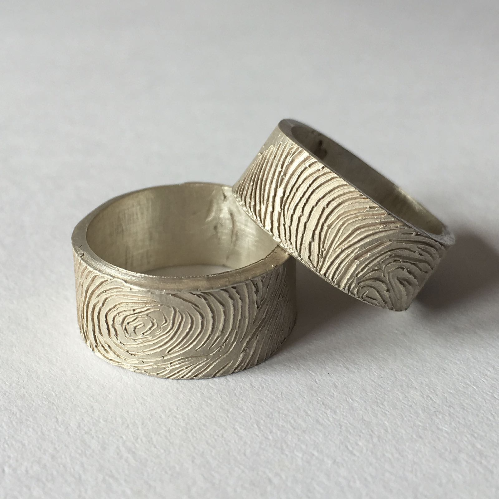

This ring is part of the Sikke series of rings that are based off the coins of India. They focus on the aspect of Indian patterns that have come to identify Indian art but are adopted versions of victorian patterns from the British Empire. This ring in particular incorporates motifs from the most modern version of the Indian Rupee coins on its ends. Made in 925 Sterling Silver.
This ring is part of the Sikke series of rings that are based off the coins of India. They focus on the aspect of Indian patterns that have come to identify Indian art but are adopted versions of victorian patterns from the British Empire. This ring is wrapped with the lotus patterned motifs from the Indian Rupee coins minted in 2012. Made in 925 Sterling Silver.
This ring is part of the Sikke series of rings that are based off the coins of India. They focus on the aspect of Indian patterns that have come to identify Indian art but are adopted versions of victorian patterns from the British Empire. This ring is imprinted with the victorian-esque style of the ¼ Anna from 1852 India. Made in Bronze.
This ring is part of the Sikke series of rings that are based off the coins of India. They focus on the aspect of Indian patterns that have come to identify Indian art but are adopted versions of victorian patterns from the British Empire. This ring further develops the less significant motifs from all the 2012 Rupee coins and glorifies them in weight and importance. Made in 925 Sterling Silver.
This pair of rings was made for partners. Each ring has one of each partner’s fingerprints on it. The ring with the partner’s fingerprint goes to the other partner. Made in 925 Sterling Silver
